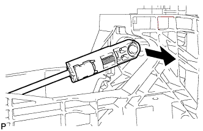
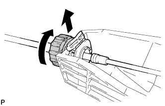
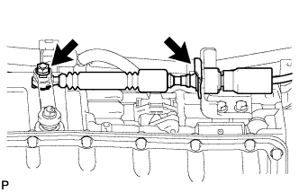

ТРОС МЕХАНИЗМА ПЕРЕКЛЮЧЕНИЯ ПЕРЕДАЧ > СНЯТИЕ |
| 1. СНИМИТЕ ВЕЩЕВОЙ ЯЩИК В ОБЛИЦОВКЕ ТУННЕЛЯ ПОЛА В СБОРЕ |
Снимите задний вещевой ящик в облицовке туннеля пола (Нажмите здесь).
| 2. СНИМИТЕ ВЕЩЕВОЙ ЯЩИК В ОБЛИЦОВКЕ ТУННЕЛЯ ПОЛА В СБОРЕ (для моделей с холодильной камерой) |
Снимите вещевой ящик в облицовке туннеля пола (Нажмите здесь).
| 3. СНИМИТЕ ТРОС МЕХАНИЗМА ПЕРЕКЛЮЧЕНИЯ ПЕРЕДАЧ В СБОРЕ |
Установите рычаг переключения передач в положение N.
|  |
Отсоедините конец троса механизма переключения передач от рычага переключения передач.
|  |
Поверните разъем примерно на 180° против часовой стрелки и, зафиксировав гайку в таком положении, отсоедините трос механизма переключения передач от держателя рычага переключения передач.
|  |
Отверните гайку, освободите фиксатор и отсоедините трос механизма переключения передач в сборе от автоматической трансмиссии.
 |
Отверните 2 гайки и отсоедините провод соединения с массой и опору троса механизма переключения передач.
 |
Отверните 2 гайки, открепите 3 захвата, а затем вытащите трос механизма переключения передач.